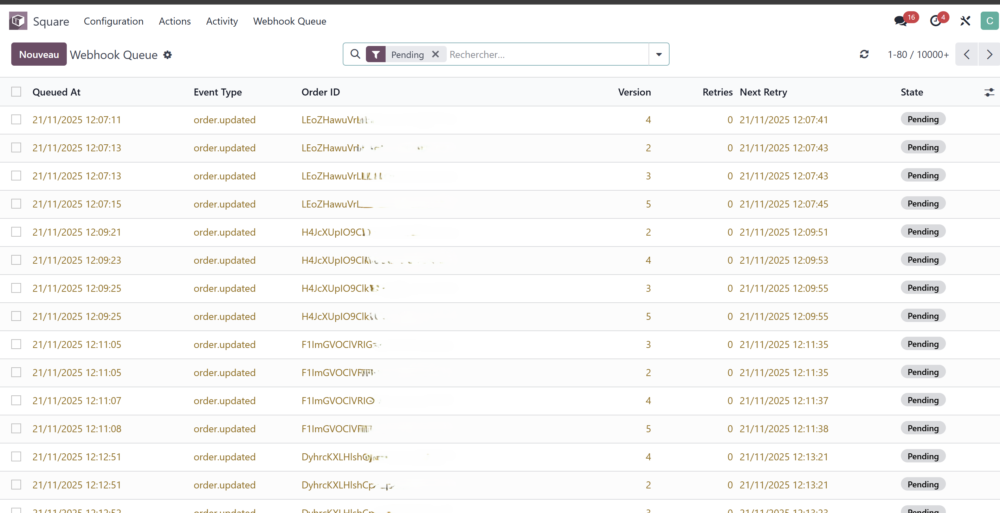
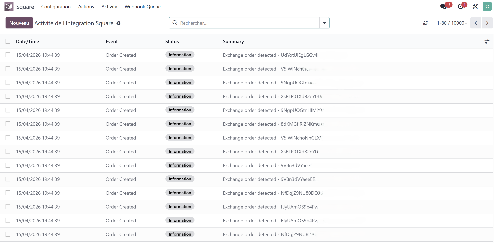

ODOO 18.0 · SQUARE POS
Square POS Integration
Bring Square POS sales, payments, refunds, and exchanges into Odoo 18 Community.
Developed by Davai. Independent integration, not an official Square or Odoo product.
ODOO 18.0 · SQUARE POS
Developed by Davai. Independent integration, not an official Square or Odoo product.
Square POS Integration is the same application, odoo_square,
with a separate release for each Odoo version. Use the Versions selector
on this page to download the release that matches your Odoo server.
Read the requirements and setup instructions on the selected version's page before installing. Moving an existing Odoo database to another major version requires a separate database migration.
Complete checkout and collect payment in Square POS. The addon imports the sale and records the invoice, payment, and delivery in Odoo.
New Square orders are matched to existing Odoo contacts by email, then phone, then name. The addon can create a contact when no match is found. Square SKUs match Odoo product internal references.
Initiate refunds and exchanges in Square. The addon records full and partial EUR refunds in Odoo with credit notes, refund payments, and stock returns where applicable. Supported exchanges record returned and replacement items, including any payment or refund for a price difference.
Square sales and returns update stock in the mapped Odoo warehouse. Eligible Odoo stock movements and quantity adjustments send warehouse quantities to the mapped Square location. The addon avoids sending Square-originated stock movements back to Square.
Open Square → Activity to review webhook processing, stock synchronization, and errors. Related sales orders can also show integration messages in the chatter.
18.0 branch.https://your-odoo-domain.example/square/webhook for the events listed below.Interface examples from an earlier release.
Configure Square credentials, the signing key, payment journal, and warehouse mappings.

Inspect queued order events, retry status, and error details.

Review integration activity and processing errors.

Open Square → Actions to view stock synchronization settings and statistics.

Use Manual Resync Orders in the configuration to scan a date range and import selected missing orders.

base, web, sale, sales_team, account, stock, sale_stock, and paymentrequests in the Odoo environmentorder.created → completed order importorder.updated → order import, supported changes and cancellationspayment.updated → exchange detection from completed paymentsrefund.created → refund intakerefund.updated → refund state changesThe addon uses the Square API to retrieve order and catalog data and send inventory updates. Odoo stores imported records and integration logs. Configure the webhook signing key to enable HMAC-SHA256 signature verification.
Released under the GNU Affero General Public License v3.0 (AGPL-3). The source code is available on GitHub.
Questions, bug reports, and feature requests: support@davai.co.